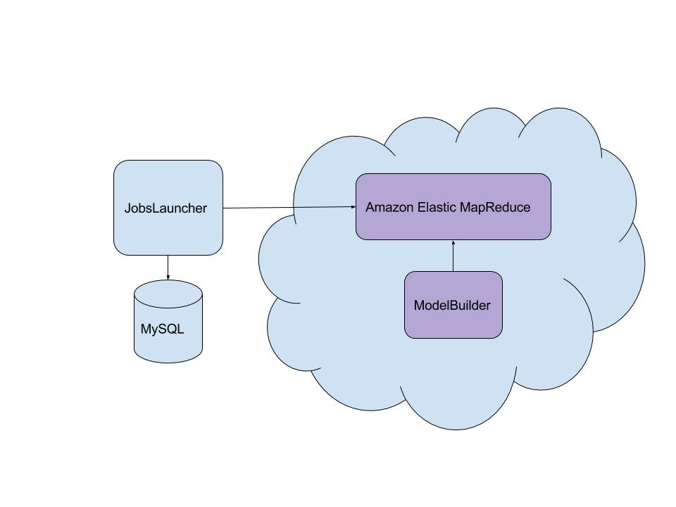

When to Test the Tests
by Wesley Harris
Hi.
- #When2TestURTest
- @NYCselenium
When do you tests the tests, Wesley?
And just who do you think you are?
Software Testing Practice Lead
Software Testing Practice Lead
WTF?
Practice
It denotes a set of socially defined ways of doing things in a specific domain: a set of common approaches and shared standards that create a basis for action, communication, problem solving, performance, and accountability.
If you are using tests merely as automated quality assurance, you are missing much, or perhaps most of their value.
Manifesto for Agile Software Testing
- We have come to value continuous improvement and emergent design over quality assurance and risk mitigation.
- That is, while there is value in the items on the right, we value the items on the left more.
- Signatories: Wesley Harris, Your Name Here
Acceptance-Test-Driven Development
GOOS

What might your tests tell you?
- If a system if hard to test, that might be telling you something about the system.
- It might also be telling you something about the team dynamics in your group.
Meet The SUT

The Problem
Production Parity

000000
000000
000000
Big Data => Little Data
Test Harness
- Should compile and deploy JobLauncher
- Should configure JobLauncher as a test environment
- Should deploy ModelBuilder to Amazon's cloud to make it available for EMR
Technology Choices


Also
- RSpec
- ActiveRecord
ATDD
- Combats the blank page problem
- Encourages good object orientation in your test harness
- Makes your tests easier to understand and maintain
Version 2


I should be able to ask my application about its state
Test in Production


Lessons Learned
- De-risk deployments
- Implementing application logic in your test is a test smell
- Avoid silos
Integration Testing
- Test along single boundaries
- Not along all of them all at once
Decompose the application

Look, Ma! No UI tests!

Enable Experimentation


Avoid Silos


The Test Pyramid

The Testing Hourglass
The Testing Hourglass
- Tests require a lot of development
- Tests require a lot of maintenance
- Test are slow
We should be testing, not automating


Don't let the pendulum swing too far back
Learn to code, not to script
Testing is a software engineering problem
Collaborate closely with testers